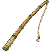

Inventário de gzttvv
#nako — 0 peixe(s) no estoque, 393 pontos acumulados (nível 7).
Resumo
Melhor captura
boitatá (776.79kg)
Vara equipada
Vara de Fibra de Vidro
Saldo
592 twishcoins
Nível
7
Equipamento
Varas possuídas

Vara de BambuVara de Fibra de Vidro
Iscas em estoque
nenhuma em estoque.
Espécies capturadas
nenhum peixe no estoque.